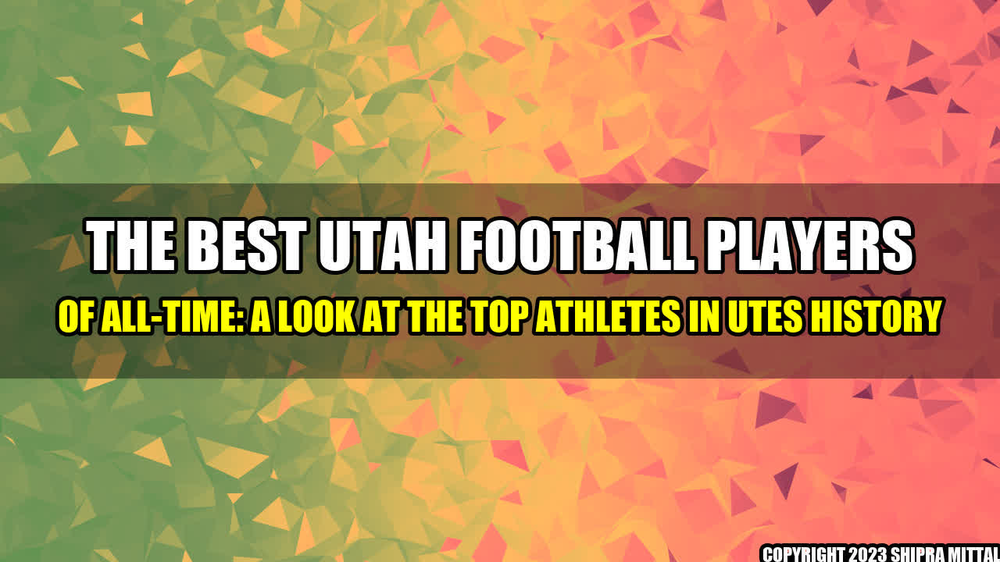

The Best Utah Football Players of All-Time
Since its inception in 1892, the Utah Utes football program has produced some incredible talents throughout the years. From local legends to NFL stars, the Utes have seen some of the finest athletes to ever hit the gridiron.
One of the most notable players in Utah Utes football history is Steve Young. The Pro Football Hall of Fame quarterback played for the Utes in the early 1980s before becoming a star in the NFL. Young led the Utes to a 22-11 record during his three years as the team's starting quarterback and was a two-time All-WAC selection. Young's talent was undeniable, and his success only continued after leaving Utah.
Another standout player is Eric Weddle, a former safety who played for the Utes from 2003-2006. Weddle was a two-time All-Mountain West Conference selection and was named a first-team All-American in 2006. He went on to have a successful NFL career and was voted to six Pro Bowls during his time in the league.
Other notable Utes football stars include Alex Smith, who is currently the starting quarterback for the Washington Football Team, and Andre Dyson, a former cornerback who played in the NFL for several seasons. These players and many others helped put Utah's football program on the map, and their success continues to inspire future generations of Utes athletes.
References and Further Readings:
Hashtags:
#utahfootballplayers #bestplayersofutah #utahutesfootball #collegefootball #utahutes #footballplayers
Category:
Sports/College Football
Author:
Akash Mittal
Akash Mittal Tech Article
Share on Twitter Share on LinkedIn